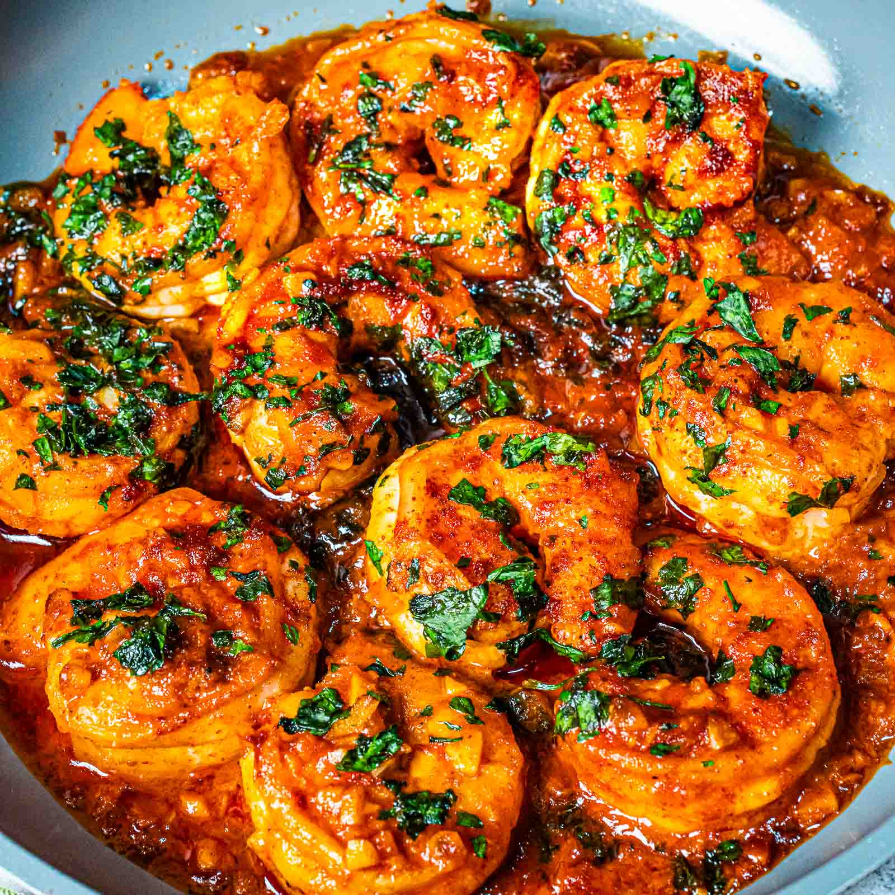

Fried Rice Recipe
Home

Description
Butter Garlic Shrimp is a simple yet flavorful dish made with juicy shrimp cooked in rich butter and fragrant garlic.
It’s quick to prepare, aromatic, and perfectly balanced with savory and slightly sweet flavors.
This dish is comforting, satisfying, and pairs well with rice, pasta, or even on its own.
Ingredients
- 500 grams shrimp (cleaned and deveined)
- 1 1/3 cup lime soda (Sprite or 7UP)
- ¼ cup butter (unsalted)
- 7 cloves of garlic (minced)
- 1 tablespoon tomato paste
- 2 tablespoons oyster sauce
- chopped spring onions (for garnish)
Steps
- Clean and devein the shrimps, then place them into a large bowl. Pour about 1 cup of lime soda over the shrimps and marinate for around 15 minutes.
- Heat a pan over low heat and melt the butter. Add the minced garlic and cook gently until lightly browned and fragrant.
- Strain the shrimps from the marinade and add them to the pan. Toss gently and cook until the shrimps turn orange. After a few minutes, remove the shrimps from the pan and set aside.
- In the same pan, add the tomato paste and sauté for about 1 minute.
- Pour around 1/3 cup of lime soda into the pan and stir until well combined.
- Add the oyster sauce and mix well. Let the sauce cook until it is slightly thickened and reduced.
- Return the shrimps to the pan and toss gently to coat them evenly with the sauce. Season with salt and pepper, then stir gently.
- Transfer the butter garlic shrimp to a serving plate and sprinkle with chopped spring onions. Serve with hot steaming rice or papak. Enjoy!
Home